UDN
Search public documentation:
LandscapeEditingCH
English Translation
日本語訳
한국어
Interested in the Unreal Engine?
Visit the Unreal Technology site.
Looking for jobs and company info?
Check out the Epic games site.
Questions about support via UDN?
Contact the UDN Staff
日本語訳
한국어
Interested in the Unreal Engine?
Visit the Unreal Technology site.
Looking for jobs and company info?
Check out the Epic games site.
Questions about support via UDN?
Contact the UDN Staff
编辑景观地形
概述
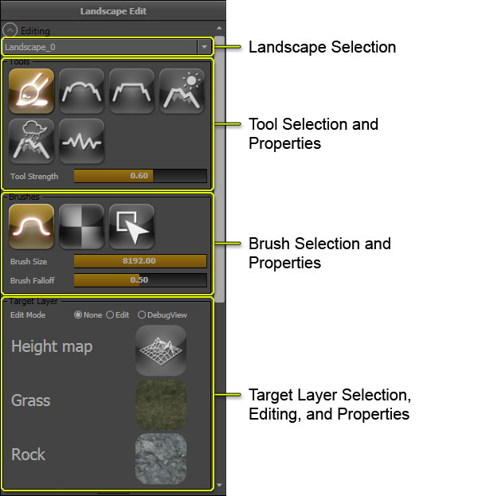
该Editing（编辑）部分允许您从关卡中所有的景观中选择一个要编辑的景观地形，并提供了访问编辑工具、 画刷及目标图层的方法。所有这些功能协同工作使得编辑景观地形的处理变得更加简单、直观。这个工具决定了要在景观上执行的动作。画刷决定了受到选中工具影响的景观区域。目标层决定了受到了该工具影响的景观方面，可以是高度图受到影响也可以是贴图层受到影响。景观编辑模式
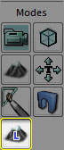
启用景观编辑模式同时会在编辑器中的任何透视口中启用实时更新功能。-landscapeedit 命令行参数时才会显示它。
景观选择
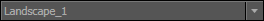
点击Landscape(景观)组合框将会显示一个列出了地图中当前所有景观的菜单。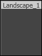
从列表中选择一个景观，使它成为激活的景观。然后便可以对那个景观应用所有的后续编辑操作。工具
| 常见控制 | 操作 |
|---|---|
| Ctrl + 鼠标左键 | 执行一笔描画，将选中工具的效果应用到高度图或选中的图层上。 |
| Ctrl + Z | 取消上一笔描画。 |
| Ctrl + Y | 重复上一笔描画。 |
描画工具
以下工具通过使用选中的画刷在高度图或图层上执行“描画”动作。Paint(描画)
 当在高度图上进行操作时，这个工具将会以当前选中的画刷的形状及衰减度来增加或降低高度图的高度或图层权重。
当在高度图上进行操作时，这个工具将会以当前选中的画刷的形状及衰减度来增加或降低高度图的高度或图层权重。
| 可替换的控制 | 操作 |
|---|---|
| Ctrl + Shift + 鼠标左键 | 降低或减少高度图或选中图层的权重。 |
| 选项 | 描述 |
|---|---|
| Total Strength（总强度） | 控制每次画刷描画所产生的影响效果的程度。 |
Smooth(平滑)
 工具平滑处理高度图或图层权重。该强度决定了平滑的量。
高度图平滑处理
(鼠标悬停图片上查看前后对比图片)
工具平滑处理高度图或图层权重。该强度决定了平滑的量。
高度图平滑处理
(鼠标悬停图片上查看前后对比图片)
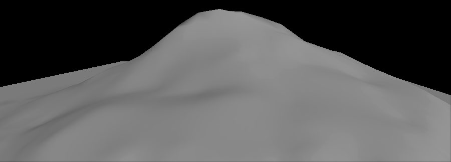
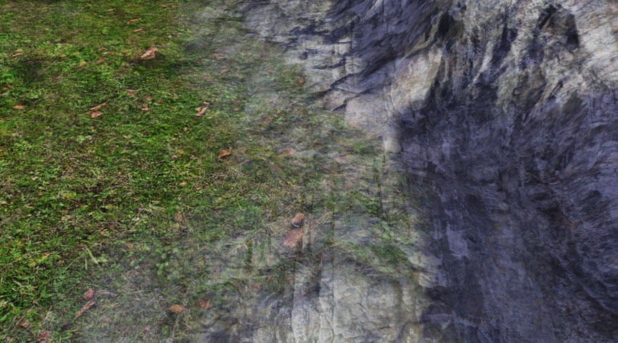

| 选项 | 描述 |
|---|---|
| Total Strength（总强度） | 控制每次画刷描画所产生平滑处理的程度。 |
| Detail Smooth(细节平滑) | 如果选中该项，那么则通过使用指定的细节平滑值来执行一次保持一定细节程度的平滑处理。较大的细节平滑处理值将会删除更多的细节，而较小的值将会保持更多的细节。 |
(鼠标悬停在图片上查看前后对比图) | |
Flatten(平整)
 当您第一次激活该工具在高度图上操作它时，将会把景观地形平整到鼠标下所在位置的地形高度级别。
(鼠标悬停图片上查看前后对比图片)
当您第一次激活该工具在高度图上操作它时，将会把景观地形平整到鼠标下所在位置的地形高度级别。
(鼠标悬停图片上查看前后对比图片)


| 选项 | 描述 |
|---|---|
| Total Strength(总强度) | 设置选中图层的权重，值为1.0意味着该图层100%不透明。 |
Thermal Erosion(热蚀)
该工具使用热蚀仿真来调整高度图的高度。这模拟了土壤从较高海拔向较低海拔变换的情景。海拔差距越大，就会发生越多的腐蚀。如果需要，这个工具也可以在腐蚀效果上应用噪声处理，从产生更加自然的随机外观。 (鼠标悬停图片上查看前后对比图片)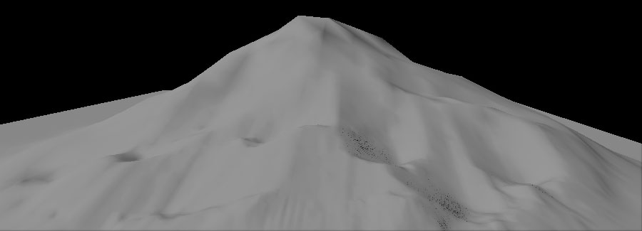
| 选项 | 描述 |
|---|---|
| Total Strength（总强度） | 控制每次画刷描画所产生的影响效果的程度。 |
| Threshold(阈值) | 应用该腐蚀效果所需的最小高度差。较小的值将会导致应用更多的腐蚀。 |
| Surface Thickness(表面厚度) | 图层权重腐蚀效果表面的厚度。 |
| Iteration Num(迭代次数) | 执行执行的重复次数。较大的值将会导致更多层次级别的腐蚀。 |
| Erosion Effects Filter（腐蚀效果滤镜） | |
| Subtraction（挖空型） | 仅应用导致降低高度图的腐蚀效果。 |
| Both(两者都) | 应用所有腐蚀��果，可以升高高度图也可以降低高度图。 |
| Addition(添加型) | 仅应用导致升高高度图的腐蚀效果。 |
| 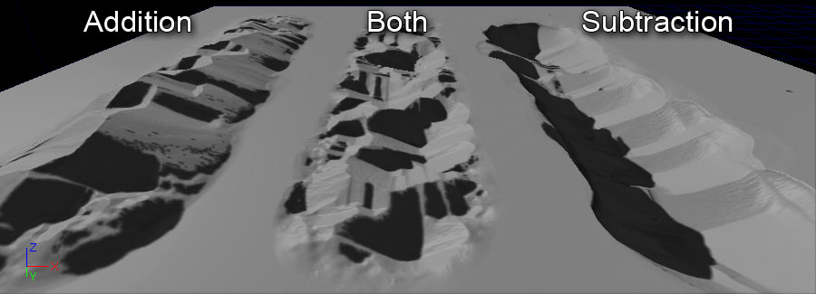 | |
| Noise Scale(噪声比例) | 噪声滤镜使用的噪声大小。噪声滤镜和位置及噪声比例相关，这意味着如果您不改变 Noise Scale(噪声比例) ，同一个滤镜会在同一位置应用很多次。 |
Hydraulic Erosion（水力腐蚀）
该工具使用水力腐蚀（也就由水产生的腐蚀）仿真来调整高度图的高度。使用噪声滤镜来决定在哪里分布初始雨量。然后计算该仿真来决定来自初始雨量的水流、溶解量、水转移量及蒸发量。最终的计算结果产生了用于降低高度图的真实值。 (鼠标悬停图片上查看前后对比图片)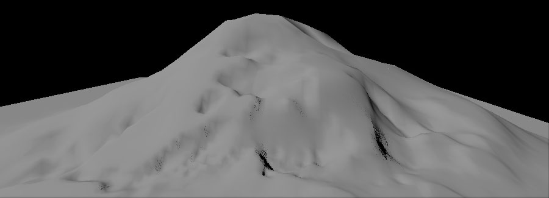
| 选项 | 描述 |
|---|---|
| Total Strength（总强度） | 控制每次画刷描画所产生的影响效果的程度。 |
| Rain Amount(雨量) | 应用到表面上的雨量。较大的值将会导致产生更多的腐蚀。 |
| Sediment Cap（携带的沉积物）. | 水可以携带的沉积物量。较大的值将会导致产生更多的腐蚀。 |
| Iteration Num(迭代次数) | 执行执行的重复次数。较大的值将会导致更多层次级别的腐蚀。 |
| Rain Distribution Filter（雨量分布滤镜） | |
| Addition(添加型) | 仅在噪声滤镜为正的地方应用雨。 |
| Both(两者都) | 在整个区域应用雨。 |
| 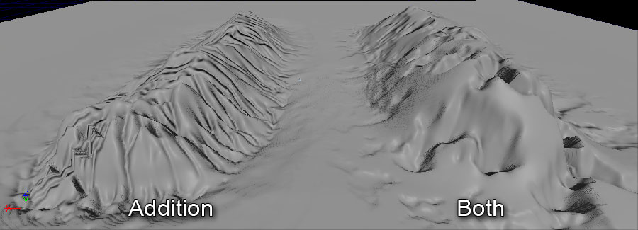 | |
| Rain Dist. Scale（雨量分布比例） | 应用到表面上的初始雨量的噪声滤镜的大小。噪声滤镜和位置及噪声比例相关，这意味着如果您不改变 Noise Scale(噪声比例) ，同一个滤镜会在同一位置应用很多次。 |
| Detail Smooth(细节平滑) | 如果选中该项，那么则通过使用指定的细节平滑值对腐蚀效果执行一次保持一定细节程度的平滑处理。较大的细节平滑处理值将会删除更多的细节，而较小的值将会保持更多的细节。 |
Noise(噪声)
 该工具给高度图或图层权重应用噪声滤镜。强度决定了噪声的量。
该工具给高度图或图层权重应用噪声滤镜。强度决定了噪声的量。
| 选项 | 描述 |
|---|---|
| Total Strength（总强度） | 控制每次画刷描画所产生的影响效果的程度。 |
| Noise Effects Filter(噪声特效滤镜) | |
| Both（两者都） | 应用所有噪声效果。 |
| Addition(添加型) | 仅应用导致高度图升高的腐蚀效果。 |
 | |
| Subtraction（挖空型） | 仅应用导致高度图降低的腐蚀效果。 |
| Noise Scale(噪声比例) | 所使用的perlin(柏林)噪声滤镜的大小。噪声滤镜和位置及噪声比例相关，这意味着如果您不改变 Noise Scale(噪声比例) ，同一个滤镜会在同一位置应用很多次。 |
组件工具
以下所介绍的工具在当前景观的组件级别上进行操作。组件选择
 该工具一次选择一个景观组件，以供后续由其他工具使用，比如将组件移动到动态载入关卡中及删除组件。
该工具一次选择一个景观组件，以供后续由其他工具使用，比如将组件移动到动态载入关卡中及删除组件。
| 可替换的控制 | 操作 |
|---|---|
| Ctrl + Shift + 鼠标左键 | 取消选中光标下的组件。 |
 当已经选中组件时，它们将变为阴影红色:
当已经选中组件时，它们将变为阴影红色:

- Clear Component Selection(清除选中组件)
- 清除当前选中的组件。
添加新景观组件
 该工具为当前景观创建新的组件，一次创建���个。
当激活 Add Landscape Component(添加景观组件)工具时，在可以添加新组建的地方光标显示为绿色线框。
该工具为当前景观创建新的组件，一次创建���个。
当激活 Add Landscape Component(添加景观组件)工具时，在可以添加新组建的地方光标显示为绿色线框。
 使用这个工具在光标所在处添加一个新的组件：
使用这个工具在光标所在处添加一个新的组件：

删除景观组件
该工具在Selection（选择）工具选中的组件上执行删除动作。 使用这个工具删除选中的组件：
使用这个工具删除选中的组件：
移动到动态载入关卡
该工具可以将使用Selection(选择)工具选中的组件移动到当前动态载入关卡中。这使得将景观部分移动到动态载入关卡中，以便可以在那个关卡中动态地载入及载出这些部分，从而优化景观的性能。 当动态载入关卡可见时，景观将会渲染所有组件： 切换关卡的可见性(可以通过在关卡浏览器中点击那个关卡的 按钮)将会导致不再渲染那个关卡中的组件：
切换关卡的可见性(可以通过在关卡浏览器中点击那个关卡的 按钮)将会导致不再渲染那个关卡中的组件：
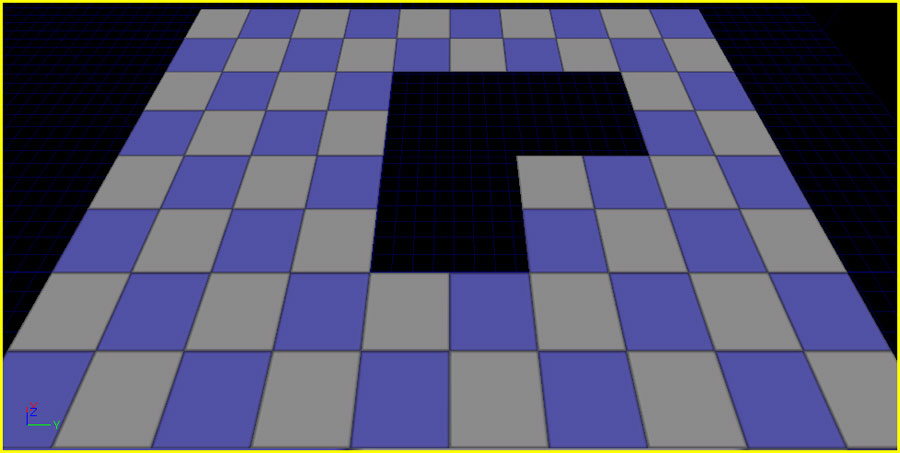
注意，如果您想使用多个动态载入关卡，您必须将您的LandscapeMaterial（景观材质）存储到一个.upk包文件中而不是存储在地图包中。如果没有这样做，当您保存关卡时将会产生跨关卡引用错误。区域工具
以下这些工具用于在景观的特定区域上执行动作。区域选择
 该工具通过使用当前的画刷设置和工具强度选择景观区域，该区域用于将gizmo(小工具)适应到指定区域，或者将其作为用于复制数据到gizmo或从gizmo中粘帖数据的蒙版。
该工具通过使用当前的画刷设置和工具强度选择景观区域，该区域用于将gizmo(小工具)适应到指定区域，或者将其作为用于复制数据到gizmo或从gizmo中粘帖数据的蒙版。

| 控制 | 操作 |
|---|---|
| Ctrl + 鼠标左键 | 添加到选中区域。 |
| Ctrl + Shift + 鼠标左键 | 从选中区域删除。 |
| 选项 | 描述 |
|---|---|
| Total Strength（总强度） | 控制每次画刷描画所产生的影响效果的程度。 |
- Clear Region Selection(清除区域选中项)
- 清除当前选中的区域。
- Use Region as Mask(使用区域作为蒙板)
- ���启用该项时，将选中区域作为蒙版，该蒙版具有由选中区域构成的激活区域。
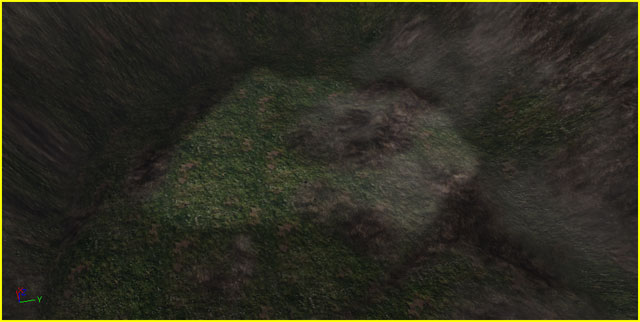
- Negative Mask(反向蒙版)
- 当启用该项及 Use Region as Mask(使用区域作为蒙板) 项时，将会把选中区域作为蒙板，但是激活的区域由未选中的区域构成。
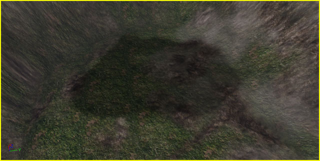
区域 复制/粘帖
该工具允许通过使用landscape gizmos（景观小工具）将景观地形的一个区域的高度数据复制到另一个区域。- Copy Data to Gizmo(复制数据到小工具)
- 复制小工具范围内的数据到小工具中，包括选中区域的任何覆盖部分。
- Fit Gizmo to Selected Regions(适应小工具到选中区域)
- 放置小工具并调整其大小，以便他完全地包围所有选中区域。 $ Fit Height Values to Gizmo Size(适应高度值到小工具尺寸) : $ Clear Gizmo Data(清除小工具数据) :
画刷
- Brush Size(画刷尺寸)
- 这决定了画刷的大小及衰减情况，以虚幻单位为单位。在该区域内，画刷至少会有某种效果。
- Brush Falloff(画刷衰减)
- 这定义了从画刷开始衰减的地方占画刷边界范围的百分比。从本质上讲，这句定了画刷边缘的尖锐度。衰减值0.0意味着画刷在整个范围内都具有完全一致效果，具有尖锐的边缘。衰减值1.0意味着画刷仅在其中心具有完全一致效果，在他的整个区域到达边缘的过程中将会衰减。
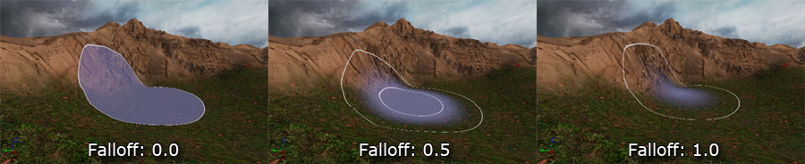
Circle Brush(圆形画刷)
圆形画刷简单地将当前工具应用到一个圆形区域。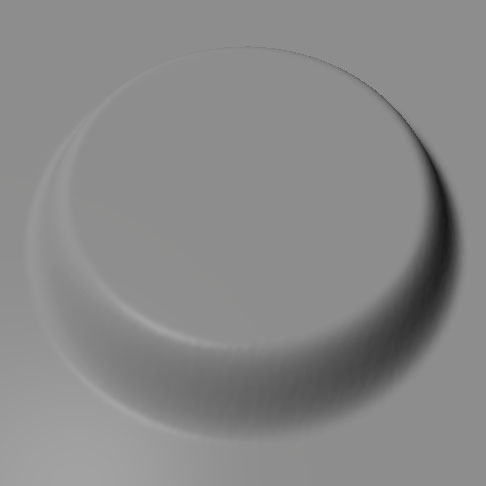
圆形画刷衰减类型
点击当前选中的画刷图标打开下拉菜单来选择衰减类型。| Smooth（平滑） | 这个衰减类型是平滑了衰减开始和结束处的明显边缘的线性衰减。 | |
| Linear(线性) | 这种衰减类型是具有非常尖锐明显的衰减边缘的线性衰减。 | |
| Sphere(球形) | 这种衰减类型使用半椭圆形的衰减，所以衰减的开始处平滑结束处的边缘尖锐明显。 | |
 | Tip（顶端） | 这种衰减类型和球形衰减相反，开始处的衰减边缘尖锐明显，结束处是平滑的椭圆形。 |

Pattern Brush(图案画刷)
图案画刷允许您通过从贴图中采样一个单独的颜色通道作为画刷的alpha值使用任意形状的画刷。随着画刷描画将会平铺贴图图案。 比如，以下贴图可以用作为alpha值：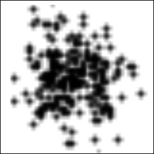
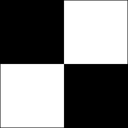
这将会产生以下画刷：
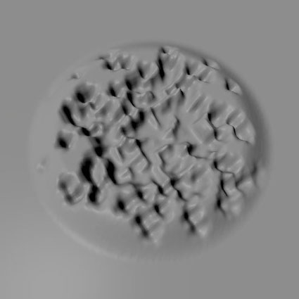
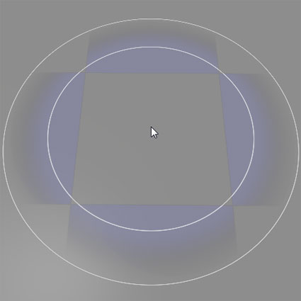

Alpha Brush(Alpha画刷)
点击Pattern(图案)画刷图标打开一个下拉菜单，该菜单允许您选择Alpha画刷。 alpha画刷和图案画刷类似，但随着你描画画刷它不会平铺贴图，而是让画刷贴图朝向你描画的方向，并随着你移动光标拖动贴图的形状。
Alpha画刷和图案画刷设置
| 设置 | 描述 |
|---|---|
| Use Texture(使用贴图) 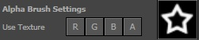 | 按下R,G,B 或A按钮将会把alpha画刷内容设置为内容浏览器中当前选中的贴图的对应通道的数据。在右侧，显示了alpha画刷的预览效果。点击预览图片将会在内容浏览器中定位当前alpha画刷的源贴图。 |
| Texture Scale(贴图比例) (仅用于图案画刷) | 设置采样的贴图相对于景观表面的尺寸。 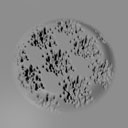 |
| Texture Rotation(贴图旋转值) (仅用于图案贴图) | 设置采样的贴图相对于景观表面的旋转度。 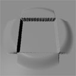 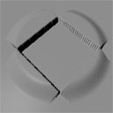 |
| Texture Pan [U/V](贴图平移[U/V]) (仅用于图案画刷) | 设置采样的贴图在景观表面上的偏移量。 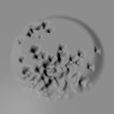 |
Component Brush(组件画刷)
组件画刷是个用于在单独组件上操作的画刷。光标每次总是限定在一个单独组件上：
仅当使用在单独组件级别上操作的工具时该画刷才可用。
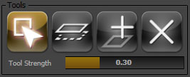
Gizmo Brush（小工具画刷）
Gizmo画刷用于完整地描画 Landscape Gizmo（景观小工具）内的区域，该工具使得在景观上指定的局部区域上进行操作成为可能。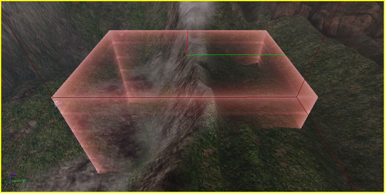
该画刷仅当激活区域 复制/粘帖工具时才有效。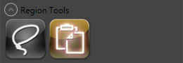
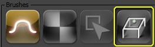
Targets（目标）
 当选中目标或聚焦到目标上时，目标将会高亮显示为蓝色：
当选中目标或聚焦到目标上时，目标将会高亮显示为蓝色：
 当聚焦指向其他地方时，选中的目标将高亮显示为白色：
当聚焦指向其他地方时，选中的目标将高亮显示为白色：

图层
Landscape图层决定了贴图(或材质网络)应用到景观地形上的方式。一个景观使用具有不同贴图、比例、旋转度、平移值的多个图层混合到一起来创建最终的带贴图的地形。
权重编辑
每个图层有个权重，指出了那个图层对景观地形的影响程度。景观地形图层没有特定的顺序。相反，每个图层的权重是分别存储的，并且几乎所有的这些权重都要达到了1.0。 要想修改该图层的权重，可以使用描画工具来增加或降低激活的图层的权重。任何时候可以修改任何图层的权重。简单地选择该图层来调整其权重，使用描画工具进行调整的方式和您描画高度图时一样。当您增加一个图层的权重时，那个区域上其他图层的权重将会均匀地降低。 相反，当描画清除一个图层时(也就是在描画时按下Ctrl+Alt键)，将不清楚增加哪个图层的权重来替换它。当前的行为是均匀地增加其它层的权重来进行匹配。由于这个现象的存在，所有不可能一下子把所有图层完全地清除。推荐您在适当的位置选择您想描画的图层，然后叠加地进行描画，而不是通过描画去除图层。景观材质
除非配置使用在景观地形对象的 LandscapeMaterial 属性中指定材质，否则描画层将没有效果。- 请参照景观材质 文档获得关于设置景观材质的更多信息。
编辑模式
景观地形默认没有图层。可以通过在 Target Layers(目标图层)部分启用Edit Mode(编辑模式)来添加新的图层。点击 Edit(编辑) 单选按钮来启用Edit(编辑)模式，它将切换显示用于添加新图层的控件。 要想添加一个新图层，需要在 Add Layer Name(添加图层名称) 文本域中输入图层的名称，并根据需要设置其他属性：
要想添加一个新图层，需要在 Add Layer Name(添加图层名称) 文本域中输入图层的名称，并根据需要设置其他属性：
- Hardness(硬度)
- 稍后完成
- NoBlend(没有混合)
- 稍后完成
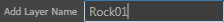
点击 按钮来创建新的图层。
按钮来创建新的图层。
 当位于Edit Mode（编辑模式）中时，列表中的目标也会显示它们的属性，正如上面所看到的，允许您编辑每个图层的 Hardness(硬度) 。
当位于Edit Mode（编辑模式）中时，列表中的目标也会显示它们的属性，正如上面所看到的，允许您编辑每个图层的 Hardness(硬度) 。
DebugView 模式
DebugView(调试视图)模式允许在视口中显示景观上指定图层的权重。当启用DebugView模式时，单选按钮允许您选择在列表中随同Targets显示选中的单独的颜色通道。 选择一个通道将会给显示选中Target(目标)覆盖的区域的景观应用一个着色器。
选择一个通道将会给显示选中Target(目标)覆盖的区域的景观应用一个着色器。
Landscape Gizmos(景观小工具)
- Width(宽度)
- Gizmo Actor的基本宽度，以虚幻单位为单位；X轴显示为红线。
- Height(高度)
- Gizmo Actor的基本高度，以虚幻单位为单位；Y轴显示为绿色。
- LengthZ(长度Z)
- Gizmo Actor的基本长度，以虚幻单位为单位。
- MarginZ（留白）
- 当你适应Gizmo到选中区域时所占空间的Z值，具有Max(最大)高度和Min（最小）高度。当您适应Gizmo到选中区域，LengthZ = (Max height - Min height) + 2 * MarginZ。
- MinRelativeZ
- Gizmo中的数据的最小高度值。Gizmo中的高度值会被正规化到 0.f到1.f之间，显示为(Value - MinRelativeZ) * RelativeScaleZ。
- RelativeScaleZ(相对比例Z)
- Gizmo中的数据的高度比例。
复制到Gizmo中
为了复制一部分景观，那么必须将那部分景观的数据复制到gizmo中。然后，稍后可以把那个数据粘帖到另一个区域。 要想复制选中区域:- 选中 Region Selection(区域选择) 工具。
- 使用画刷描画来选择景观的区域，和正常的描画过程类似。

- 启用 Use Region as Mask(使用区域作为蒙板) 项，以便当复制数据时选中部分会被用作为蒙板。
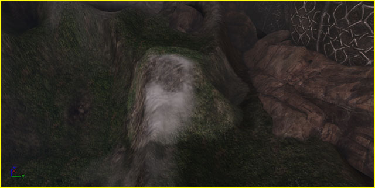
- 选中 Region Copy/Paste(区域 复制/粘帖) 工具。视口中将会出现gizmo（小工具）。
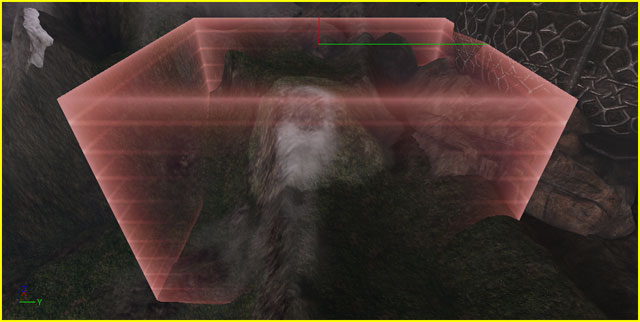
- 按下 Fit Gizmo to Selected Regions(适应Gizmo到选中区域) 来放置该gizmo并调整其尺寸，以便它包围所有选中区域。
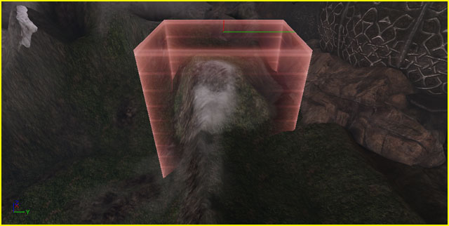
- 按下 Copy Data to Gizmo(复制数据到Gizmo) 来在gizmo范围内转移景观的选中区域的数据。按下 Ctrl + C 执行同样的功能。

- 选中 Region Copy/Paste(区域 复制/粘帖) 工具。gizmo（小工具）将会在视口中变为可见状态。
- 通过点击它选中该gizmo。将会出现变换控件。

- 可以移动、旋转及缩放gizmo，以便他包围您想复制的景观部分。

- 按下 Copy Data to Gizmo(复制数据到Gizmo) 按钮来在gizmo范围内转移景观的选中区域的数据。按下 Ctrl + C 执行同样的功能。

从Gizmo中粘帖数据
从gizmo中粘帖数据使得可以将景观部分从一个位置转移到另一个位置。可以完全地粘帖数据来创建一个同样的特征，或者可以通过使用画刷描画和强度设置将其描画到新的位置处来部分地转换其特征。 在从gizmo粘帖数据之前，首先必须将数据 复制到gizmo中。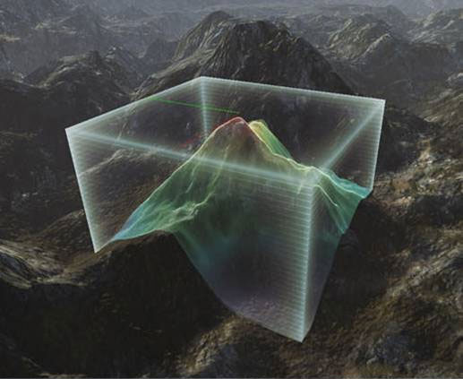
要想粘帖gizmo数据:- 移动、旋转及缩放包含数据的gizmo，以便它可以覆盖您想要粘帖数据的区域。

- 使用其中一个可用画刷（圆形画刷、图案画刷、Alpha画刷、Gizmo）粘帖数据，以便从gizmo中“描画”数据。
- 使用Gizmo画刷来将数据完全地从gizmo中粘帖出来。按下 Ctrl + V 也会执行从gizmo中完全地粘帖数据的操作。
- 其他画刷可以用于通过使用当前的画刷尺寸和强度来从gizmo中描画数据。
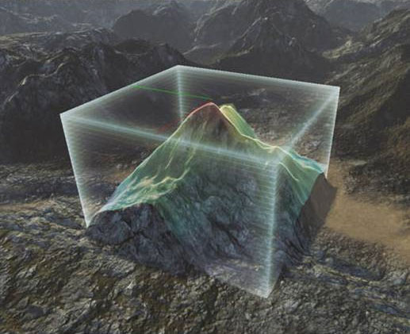
如果使用 Region Selection(区域选择) 工具选中了某个区域并启用了 Use Region as Mask(使用区域作为蒙板) 功能，那么将会根据蒙板区域应用粘帖的数据。

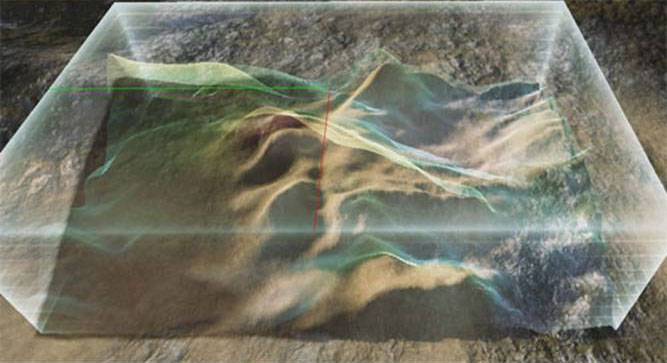
Gizmo数据 导入/导出
可以通过 Landscape Edit(景观编辑) 窗口中的 Import/Export to Gizmo(导入/导出 到Gizmo) 部分来将高度图数据导入到gizmo中或者将数据从gizmo中导出。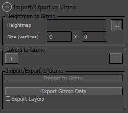
要想导出数据到Gizmo中:- 点击文件浏览按钮 ( ) 并选择那个您想导入到gizmo中的高度图文件 (16-位原始文件) 。将会在gizmo中填充高度图的文件及维度。

 注意: 因为导入过程使用原始文件格式，所以没有办法正确地决定维度的情况。必须进行尽量的猜测，但是您可能需要手动地反转维度，以便正确地导入高度图。
注意: 因为导入过程使用原始文件格式，所以没有办法正确地决定维度的情况。必须进行尽量的猜测，但是您可能需要手动地反转维度，以便正确地导入高度图。

- 如果您想导入图层权重信息，可以按下Add Layer(添加图层)按钮 (
 ) 根据需要添加任意多个图层。
) 根据需要添加任意多个图层。

- 选择要每个图层导入的高度图文件(8-位的原始文件)。填写文件及图层名称。图层名称默认使用文件名称。如果需要可以改变图层名称。启用 No Import（不导入） 复选框将会导致阻止导入任何单独图层信息。

- 一旦选中了高度图和任何图层，按下 Import to Gizmo(导入到Gizmo) 按钮来将数据导入gizmo中。
如果维度不正确，那么你可以看到类似于以下的内容：

反转维度或者重新导入高度图来获得正确的结果。如果维度是正确的，那么gizmo应该显示正确的数据。
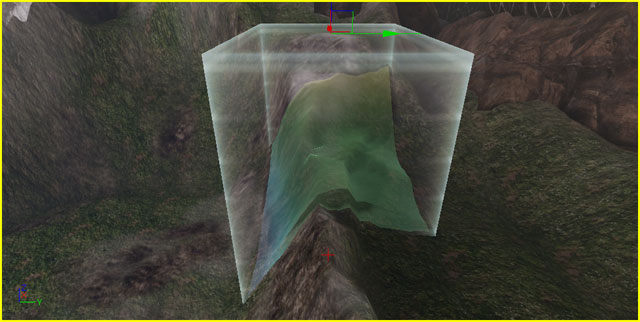
- Gizmo内填充了数据后 (请参照复制数据到Gizmo部分), 按下 Export Gizmo Data（导出Gizmo数据） 按钮可以将gizmo数据导出到文件中。启用 Export Layers(导出图层) 复选框将同时会导出图层权重数据到文件中。
- 为高度图选择一个位置和名称。
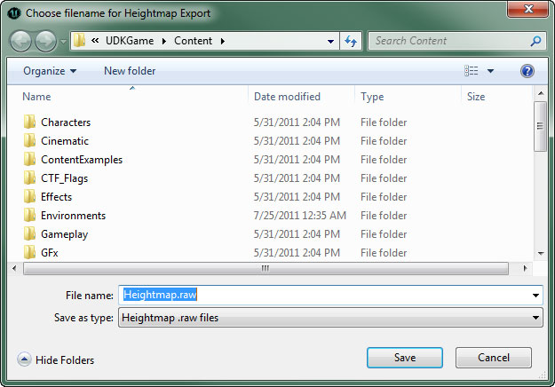
- 如果要导出图层，则需要为每个导出的图层选择位置和文件名。
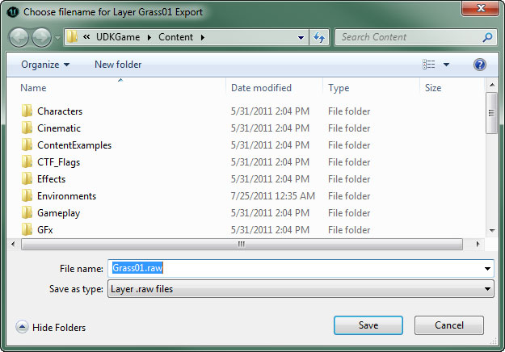
Gizmo列表
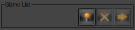
Gizmo List (Gizmo列表)显示了一系列已保存的gizmo，以便稍后可以轻松地重用它们。
| 控制 | 描述 |
|---|---|
| 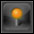 | 保存gizmo的当前位置、尺寸和旋转度到列表中。 |
 | 删除列表中当前选中的gizmo。 |
 | 设置gizmo的位置、尺寸和旋转度为列表中当前选中的gizmo的位置、尺寸和旋转度。 |